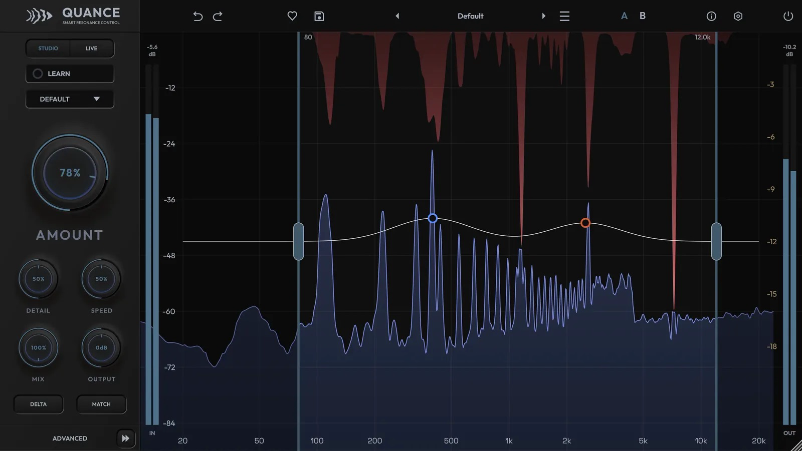

Quance

Developed at Atlantic Audio Development.
Description
Quance is a resonance suppressor by CodWaves that finds and reduces harsh resonances in real time, while protecting the tone and transients of the source. It works on vocals, instruments, drums and full mixes, with modes for both studio mixing and low-latency live use.
My Work
During development, I set up the UI code structure and its link to the plugin parameters, and built almost every interface component from a Figma design, from panels, popups, knobs, and buttons to the spectrum graph, level meters, preset browser, and the rest of the visible interface. Behind the interface, I built the logic that drives it: preset saving, loading and deleting, A/B states, and a settings system that stores the user's preferences, such as interface size, font scaling, and tooltip visibility, keeping them in sync across every open instance of the plugin.
On the DSP side, I implemented the sidechain input and plugin bypass, removed a psychoacoustic compensation that was degrading the resonance reduction, and skipped metering and analysis work while the editor is closed. I also built the processing modes: Live runs a single short STFT window for low latency, while Studio splits the signal into three bands with long windows for the lows and short ones for the highs, with Pro and Ultra quality options. Window sizes scale with the sample rate, and the chosen mode can be applied to every instance in the project. Finally, I tested the plugin and suggested improvements.
Note: I left the team before the commercial release, so I can't confirm every part of this made it into the final version, although the released plugin appears to include it.
Visit Quance product page- C++
- JUCE
- DSP
- STFT
- Real-time audio
- GUI development
- Custom LookAndFeel
- Figma
- Preset management
- Plugin state
- CMake
- CLion
- Git